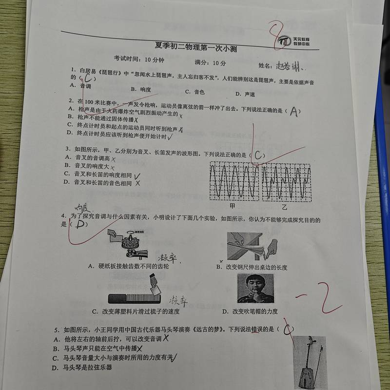

物理小测 · 第5题
天元教育 · 初二暑假物理第一次小测 · 2026-07-25

题目
如图所示，小王同学用中国古代乐器马头琴演奏《远古的梦》。下列说法错误的是（ ）
❌ 我的答案
C. 马头琴音量大小与演奏时所用的力度有关
✅ 正确答案
C. 马头琴音量大小与演奏时所用的力度有关
（此题选"错误"项，老师判定C为答案）
📌 错因
概念不清 — 音调（频率）与响度（振幅）混淆
打开错题库查看
回学习中心
已自动导入错题库！